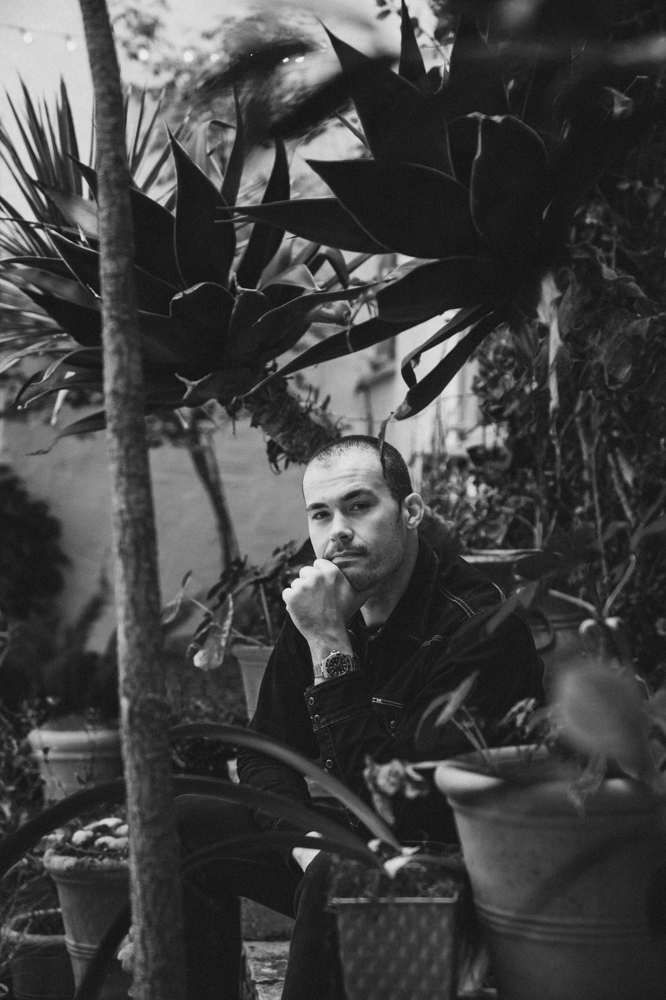

CHRIS HALL
Senior Video Producer at Y Combinator.
New York–born media operator.
Based in San Francisco.

Known for work with Garry Tan, Jessica Livingston, Y Combinator, and more.
About Chris
I’m a New York–born media operator based in San Francisco, working across video, audio, photography, and live production.
After co-founding and operating startups, I founded Hall Media in 2019 to help founders and executives develop their media presence. I’ve produced Garry Tan’s video content since 2020 and produce The Social Radars with Jessica Livingston and Carolynn Levy.
In January 2026, I joined Y Combinator as Senior Video Producer.
TIMELINE
- NYC2009freelance photo . video . audio — new york city, 220+ productions
- 2012young people's chorus of nyc — content lead, toured japan . china . usa
- 2014kickster, co-founder — #1 sneaker app on the app store
- 2016dj khaled snapchat campaign — 300M+ impressions
- 2017showroom, co-founder — premium merch for top creators
- 2019hall media, founder — media systems for founders & executives
- 2020garry tan — executive producer
- 2021boerum studios, co-founder — commercial photo + video studio, brooklyn
- FL2023jessica livingston — executive producer
- SF2025may — moved to sf to work more with garry tan in person
- 2026january — joined y combinator . senior video producer — san francisco